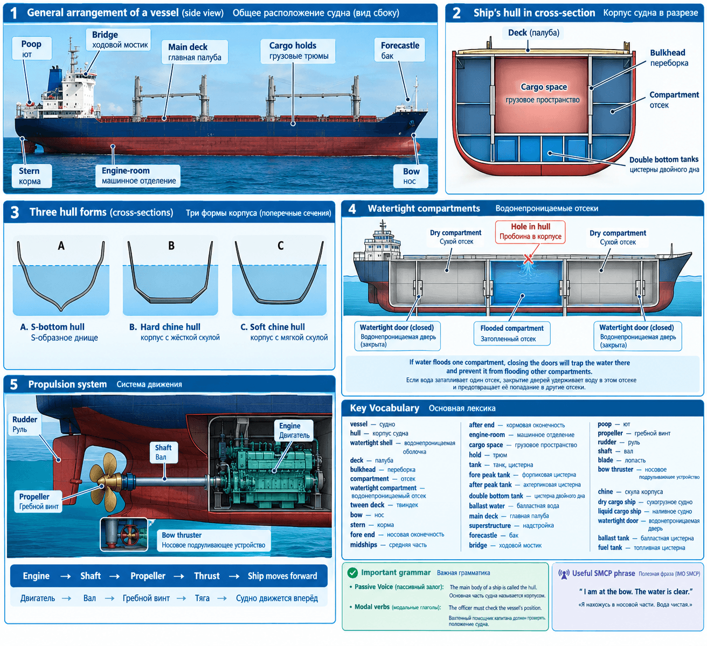

Maritime English — Уроки
Home
Unit 1 - Main Parts of a Vessel. Ship's Hull
Unit-1 work text
Main Parts of a Vessel. Ship's Hull
Figure - Main Parts of a Vessel. Ship's Hull
Ship Equipment and Cargo Operations
Figure - Ship Equipment and Cargo Operations
Unit 2 - Types of Ships
Unit-2 work text
Maritime English — Уроки

« Назад
Вперед »